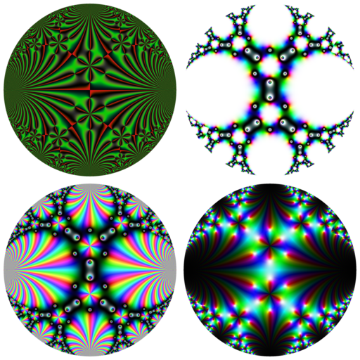
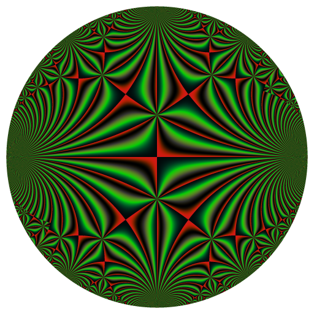
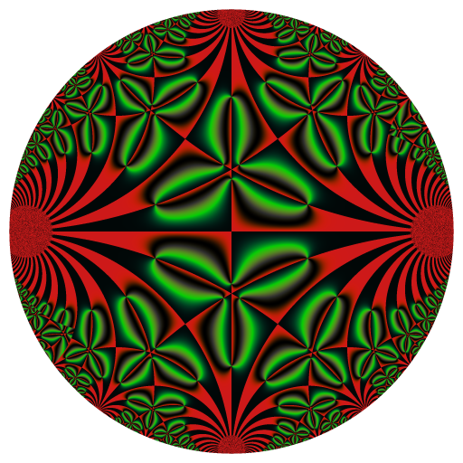
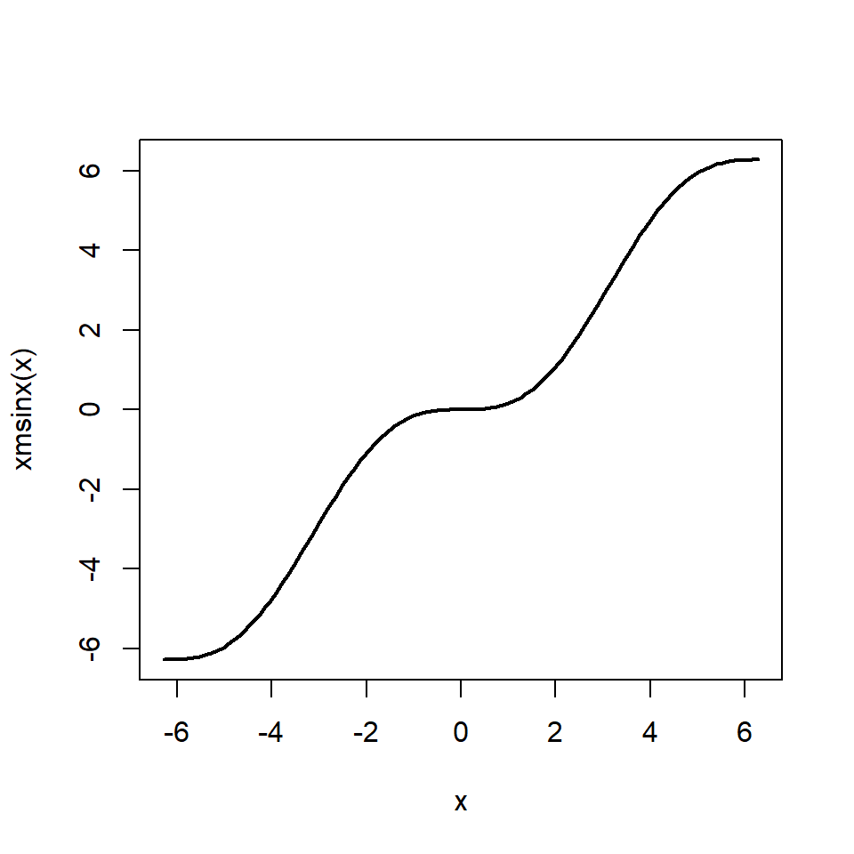
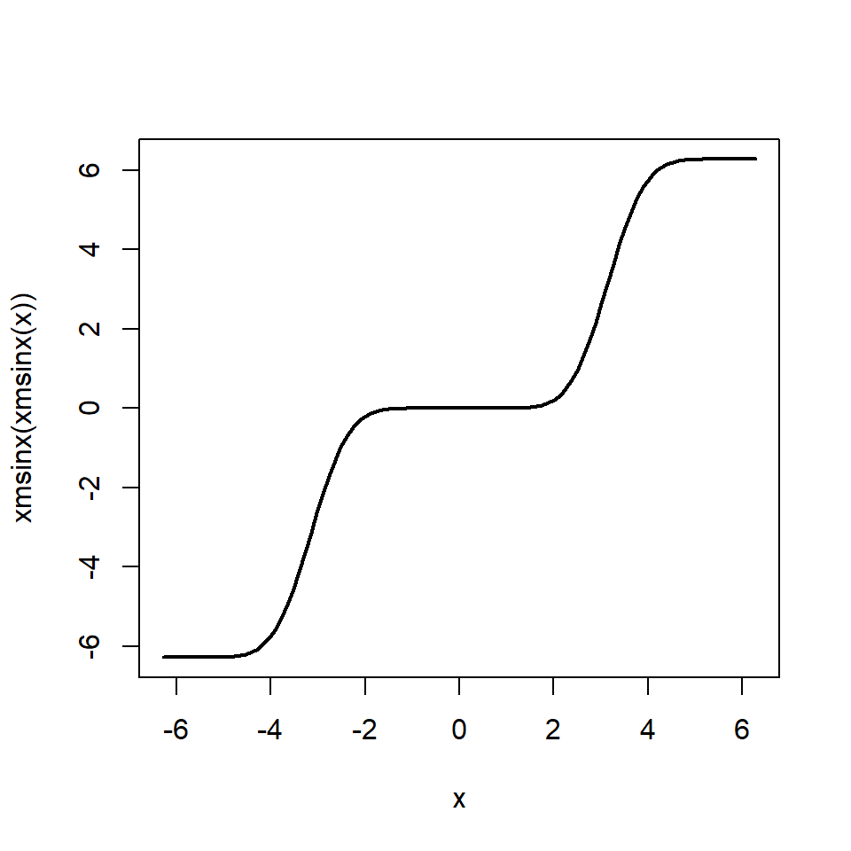

The pretty Klein j-invariant function
Here are four representations of the Klein j-invariant function:

The Klein j-invariant function is a complex function defined on the upper half-plane of the complex numbers. On the above pictures, we mapped it to a circle with the inverse modified Cayley transformation, which is defined by \[ \Psi(z) = i + 2iz / (i - z) \] and which maps the unit circle to the upper half-plane. Then I use some color maps to do these pictures. These color maps are available in the RcppColors package.
I particularly like the first picture and I did an animation of it. The purpose of this blog post is to explain how I did.
The animation is made with the help of a modular Möbius transformation \[ R(z) = - \frac{1}{z+1} \] and its generalized powers \[ R^t(z) = \frac{\Bigl(\sqrt{3}\cos\bigl(\frac{\pi t}{3}\bigr) - \sin\bigl(\frac{\pi t}{3}\bigr)\Bigr) z - 2\sin\bigl(\frac{\pi t}{3}\bigr)} {2\sin\bigl(\frac{\pi t}{3}\bigr) z + \sqrt{3}\cos\bigl(\frac{\pi t}{3}\bigr) + \sin\bigl(\frac{\pi t}{3}\bigr)} \] This transformation is of order three, i.e. \(R^3(z)=z\). I found it in this paper.
Let’s define it in R:
R <- function(z, t) {
a <- pi*t/3
((sqrt(3)*cos(a) - sin(a)) * z - 2*sin(a))/
(2*sin(a) * z + sqrt(3)*cos(a) + sin(a))
}as well as the inverse modified Cayley transformation (also found in the above paper):
Psi <- function(z) {
1i + (2i*z) / (1i - z)
}This function \(\Psi\) is the one we will use to represent the Klein j-invariant function on a circle.
Now, I made a grid of the unit circle. Well, not really. The Klein j-invariant function is available in the jacobi package under the name kleinj. But when a complex number tau in the upper half-plane (i.e. with positive imaginary part) is too close to the real line, the kleinj function fails. The inverse modified Cayley transform \(\Psi\) maps the boundary of the unit circle to the real line. So I take the centered circle of radius \(0.96\) instead of the unit circle. I apply \(\Psi\) to each point \(z\) in this circle, and I return \(\Psi(z)\) or \(-1/\Psi(z)\). Later I will apply \(j\) (the Klein j-invariant function) to the results. The reason for which I return \(-1/\Psi(z)\) sometimes (when \(\Im(z)<0\)) is that \(j(\tau) = j(-1/\tau)\) and I found that applying this transformation avoids some failures of kleinj.
library(jacobi)
f <- function(x, y) {
z <- complex(real = x, imaginary = y)
w <- Psi(z)
ifelse(
Mod(z) > 0.96,
NA_complex_,
ifelse(
y < 0, -1/w, w
)
)
}
x <- seq(-1, 1, length.out = 2048L)
y <- seq(-1, 1, length.out = 2048L)
Z <- outer(x, y, f)
K <- kleinj(Z) / 1728In fact, there are two Klein j-invariant functions, differing by a factor of \(1728\). That’s why I divide by \(1728\): I take the other Klein function.
We’re almost ready. But there’s an issue and we will have to overcome it. Let’s load the RcppColors package, and we will use the colorMap5 color map. Observe the “first” picture, the one obtained without applying \(R^t\):
image <- colorMap5(K), bkgcolor = "white")
svg("x.svg")
opar <- par(mar = c(0,0,0,0))
plot(
c(-1, 1), c(-1, 1), type = "n", xaxs = "i", yaxs = "i",
xlab = NA, ylab = NA, axes = FALSE, asp = 1
)
rasterImage(image, -1, -1, 1, 1)
par(opar)
dev.off()
rsvg::rsvg_png(
"x.svg", "Klein_t0.png", width = 512, height = 512
)
And now, observe the picture obtained by applying \(R^{0.01}\);
image <- colorMap5(R(K, 0.01), bkgcolor = "white")
svg("x.svg")
opar <- par(mar = c(0,0,0,0))
plot(
c(-1, 1), c(-1, 1), type = "n", xaxs = "i", yaxs = "i",
xlab = NA, ylab = NA, axes = FALSE, asp = 1
)
rasterImage(image, -1, -1, 1, 1)
par(opar)
dev.off()
rsvg::rsvg_png(
"x.svg", "Klein_t001.png", width = 512, height = 512
)
There’s a “jump”: the transition from the first picture to the second one is too fast. So, since we want to make the pictures with \(t\) running from \(0\) to \(3\), we need to slow down the transition when there’s such a jump. We will use a “smooth staircase function” for that. A nice one is \(x - \sin(x)\):
xmsinx <- function(x) x - sin(x)
curve(xmsinx, from = -2*pi, to = 2*pi, lwd = 2)
I firstly tried to use this function but this is not enough: the transitions are still too fast. We can iterate this function to get more slowness:
curve(xmsinx(xmsinx(x)), from = -2*pi, to = 2*pi, lwd = 2)
This one is good. We need to modify it in order that the “stairs” fit the “jumps”. We will range \(t\) from \(-2\pi\) to \(\pi\) and we will apply the modified smooth stair case function \(s\) defined by
s <- function(x) {
(xmsinx(xmsinx(2*x)) + 4*pi) / (2*pi)
}Applied to \(t\) will give a range from \(0\) to \(3\).
We’re ready! Let’s make the animation frames:
t_ <- seq(-2*pi, pi, length.out= 91L)[-1L]
for(i in seq_along(t_)) {
KRt <- R(K, s(t_[i]))
image <- colorMap5(KRt, bkgcolor = bkgcol)
svg("x.svg")
opar <- par(mar = c(0,0,0,0))
plot(
c(-1, 1), c(-1, 1), type = "n", xaxs = "i", yaxs = "i",
xlab = NA, ylab = NA, axes = FALSE, asp = 1
)
rasterImage(image, -1, -1, 1, 1)
par(opar)
dev.off()
rsvg::rsvg_png(
"x.svg", sprintf("frame%03d.png", i), width = 512, height = 512
)
}The frames are done. It remains to mount them to a GIF with gifski.
library(gifski)
pngFrames <- Sys.glob("frame*.png")
gifski(
pngFrames,
"Kleinj.gif",
width = 512, height = 512,
delay = 1/10
)
file.remove(pngFrames)